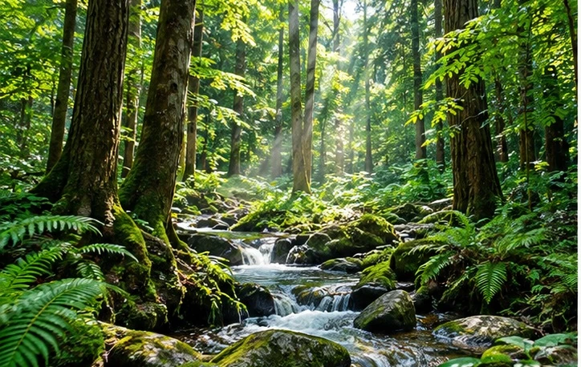
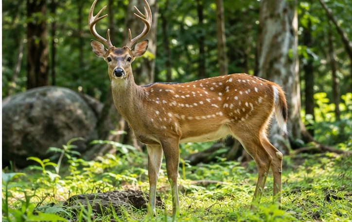
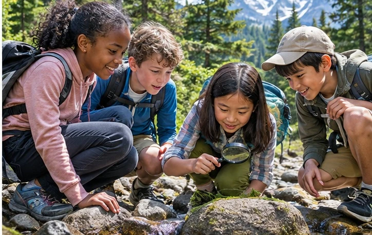
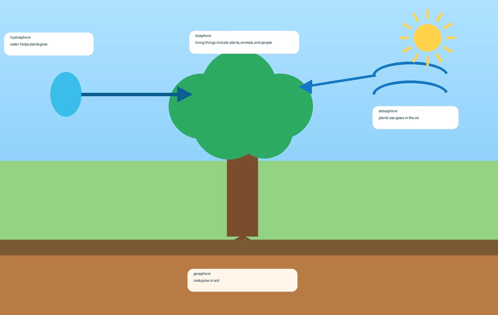

EARTH EXPLORERS / SCIENCE READER
The Biosphere
Earth's Living World
01 / DISCOVER
What Is the Biosphere?
The biosphere includes all living things on Earth. Plants, animals, people, and tiny living things are all part of it.
Living things live in many habitats, such as forests, oceans, deserts, and grasslands.
AMAZING FACTThe biosphere is found almost everywhere on Earth where life can survive.
02 / EXPLORE
Plants Are Living Things
Plants are part of the biosphere. They make food and provide homes for many animals.
A plant needs water, air, sunlight, and soil to grow well.

Plants grow in the biosphere · IllustrationLOOK + THINKWhat signs of life do you see in the forest?
Animals Are Living Things
Animals are part of the biosphere. They need food, water, air, and shelter.
Some animals live on land. Others live in water or in the air.

A deer is an animal · IllustrationSPHERE CONNECTIONA deer is in the biosphere. It depends on water, air, and land to live.
03 / CONNECT
People Are Part of Nature
Humans are living things, so people are part of the biosphere, too.
People observe nature, care for habitats, and learn from Earth's systems.

People explore and learn · IllustrationTHE BIOSPHERE SUPPORTS LIFEAnother amazing job: Insects like butterflies help some plants make seeds by moving pollen.
Living Things Need Other Spheres
A tree grows in soil from the geosphere. Its roots take in water from the hydrosphere.
Its leaves use gases from the atmosphere. The tree itself is part of the biosphere.

A tree needs air, water, and soil · Diagram from the classroom readerLIFE IS CONNECTED · DIAGRAM KEYHydrosphere: water helps plants grow.
Biosphere: living things include plants, animals and people.
Atmosphere: plants use gases in the air.
Geosphere: roots grow in soil.
04 / YOUR MISSION
Earth Is Connected!
Every living thing depends on other parts of Earth. A forest needs water, air, and healthy soil.
Animals and people also need all three. Life connects the spheres together.
FOUR SPHERESLiving things survive because Earth's spheres work together.
AIRWATERLANDLIFE